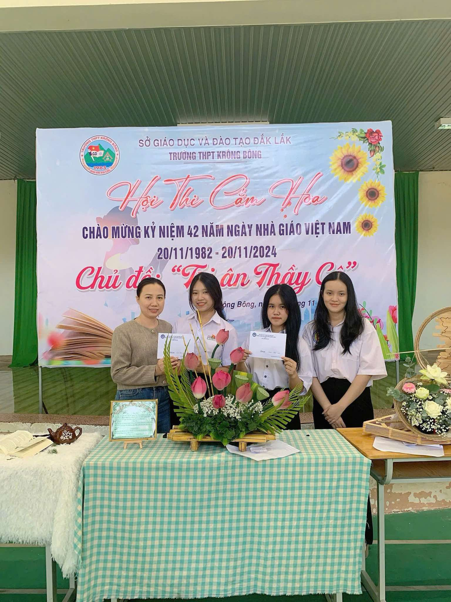
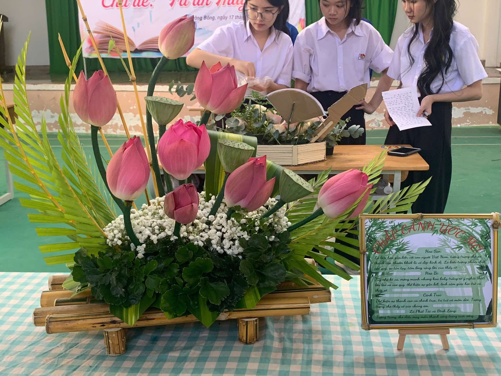
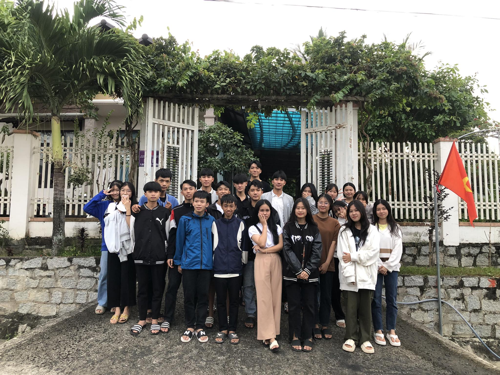
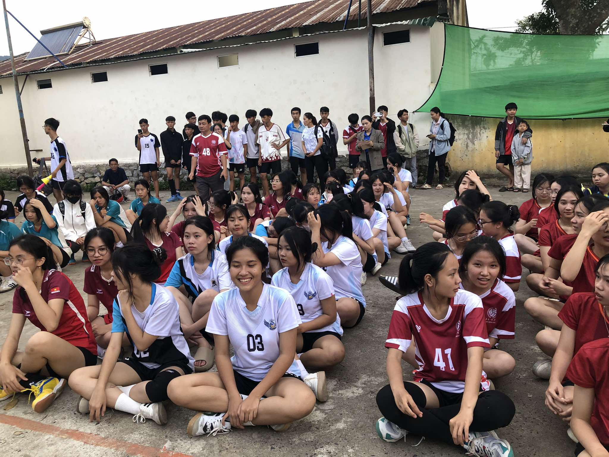

  |
"Con thuyền tre mộc mạc chở đầy sắc sen hồng chính là hình ảnh đẹp nhất về người thầy – người lái đò thầm lặng đưa bao thế hệ học trò qua sông. Từng thanh tre gắn kết vững chãi làm mạn thuyền, nâng đỡ những cánh hoa thanh cao vươn mình ra biển lớn tri thức. Một biểu tượng của lòng biết ơn, giản dị mà chứa chan tình nghĩa." |
"Chuyến thăm thầy cô không chỉ là cuộc gặp gỡ, mà là hành trình tìm về những kỷ niệm vô giá. Dưới mái hiên quen thuộc, những nụ cười hiền hậu và lời hỏi thăm ấm áp khiến chúng em hiểu rằng: Dù khôn lớn bay xa, tình thầy trò vẫn luôn là bến đỗ bình yên nhất trong trái tim mỗi người." |
 |
 |
"Sức trẻ và tinh thần thể thao chính là món quà rực rỡ nhất gửi tặng thầy cô. Những trận bóng chuyền kịch tính không chỉ là cuộc đua về tỉ số, mà còn là nơi chúng em rèn luyện bản lĩnh và sự đoàn kết." |
Nhấn để mở thư 💌